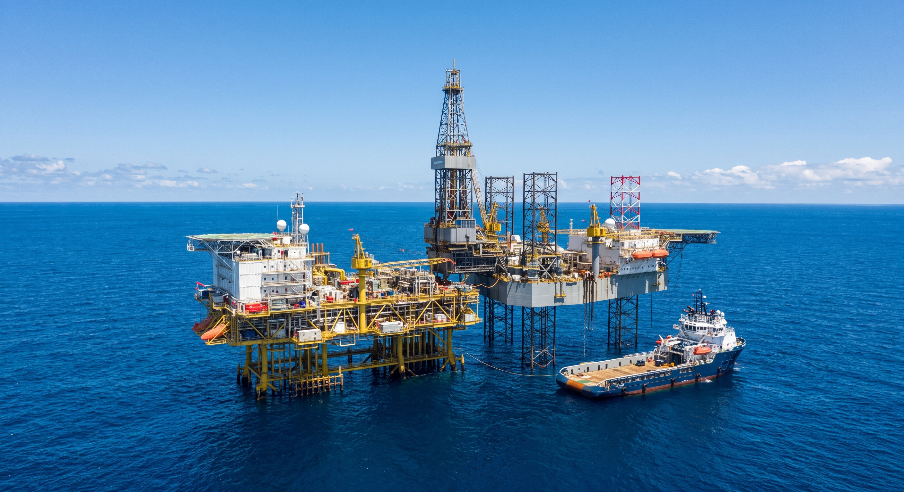
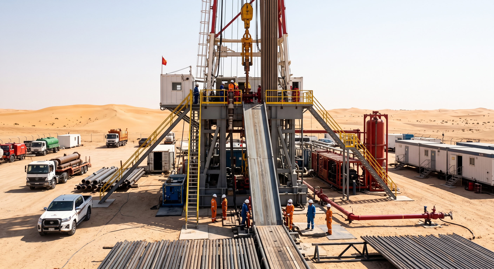
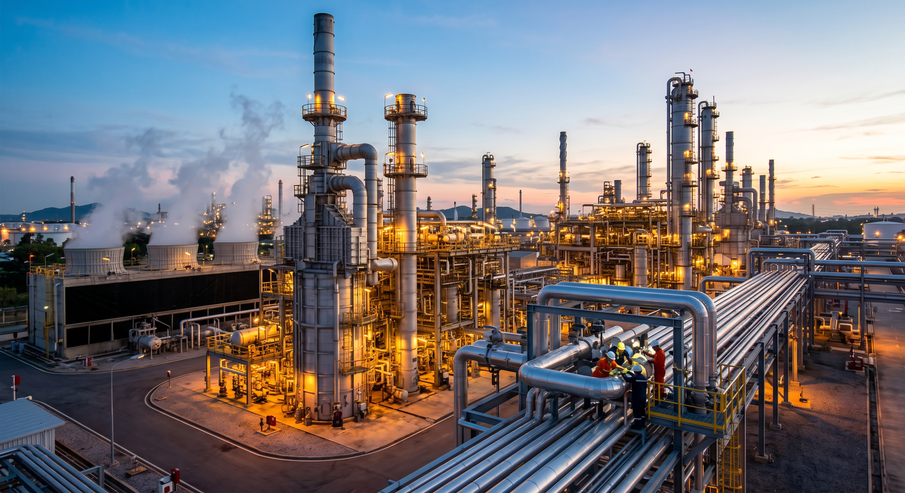

Service 05
Oil & Gas Solutions
Practical support for energy-sector operations, projects, and supply requirements.




Oil and Gas Solutions
The energy sector demands robust engineering expertise paired with uncompromising environmental stewardship. STL provides cutting-edge Oil and Gas solutions designed to optimize your operations from initial assessment through to commissioning and maintenance. We simplify complex field executions, delivering quality-driven results tailored to industry standards while championing sustainable development and operational excellence.
Support for energy operations
Operational support, project services, and supply-chain solutions for oil and gas operators.
Discuss your needs